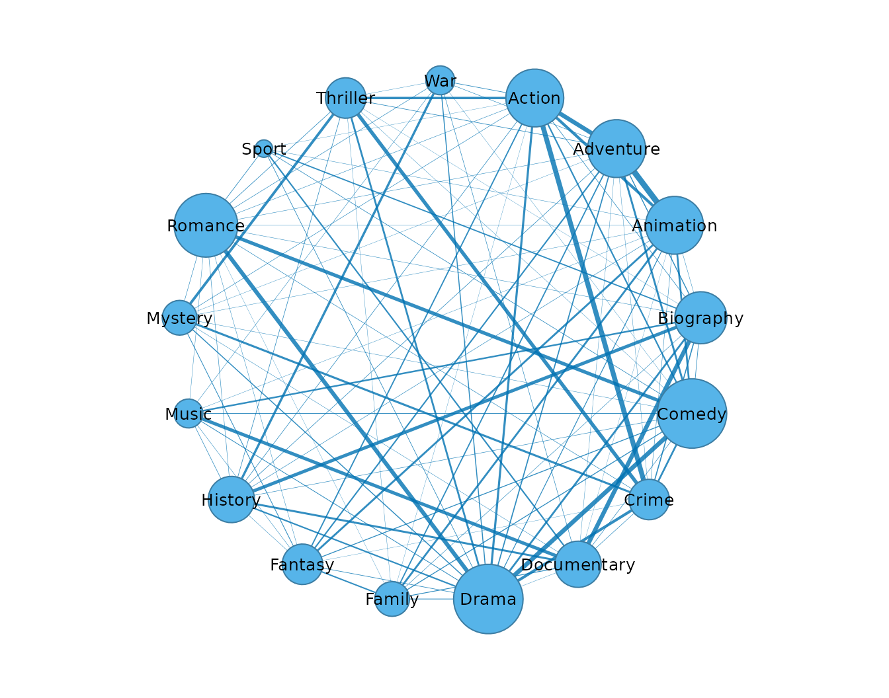
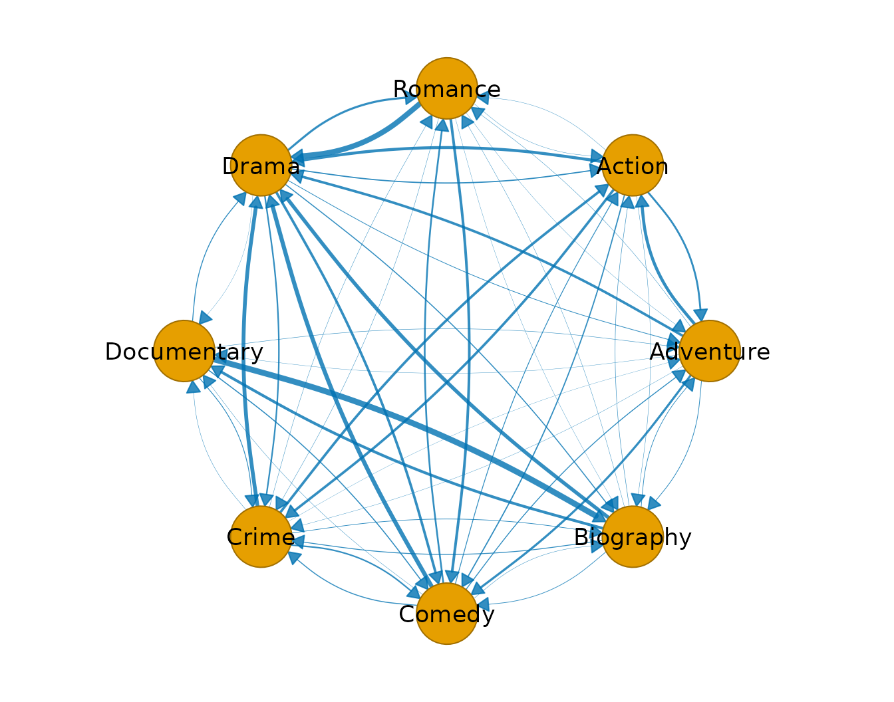

Exporting networks
Written by Mohammed Saqr and Sonsoles López-Pernas
Source:vignettes/articles/exporting.Rmd
exporting.RmdBuilding a co-occurrence network is rarely the last step of an analysis. The network is then described with centrality measures, partitioned into communities, drawn for publication, compared with networks estimated by other methods, or handed to software outside R. Each of these tasks has its own established tools and data structures: an edge table for spreadsheet software and Gephi, a weight matrix for clustering and matrix algebra, and graph objects for the R network libraries. A network that can be moved between them without re-entering its edges keeps the analysis reproducible and lets each tool be used for what it does best.
cooccurrence() returns the network as a tidy edge list.
This guide shows how to turn it into each of the other forms: a
Gephi-ready table, a weight matrix, and graph objects for , , and . It
ends with the directed relative network, which every format
keeps directed, and with networks built per group.
Data
movies holds 1,000 films with an IMDb rating of at least
7.0, released between 1970 and 2024. In the analyses below:
- Transaction: a film (one row).
-
Items: its genres, in the comma-delimited
genrescolumn. -
Grouping variable:
decade, used in the last section.
The network used throughout links genres on at least 20 films by their Jaccard similarity.
genre_net <- cooccurrence(movies, field = "genres", sep = ",",
similarity = "jaccard", min_occur = 20)
print(genre_net, n = 3)
#> # cooccurrence: 17 nodes, 102 edges | density: 0.7500 | mean degree: 12.0000 | 998 transactions
#> # similarity: jaccard | counting: full
#> # possible edges: 136 | isolates: 0
#> # top nodes: Drama(deg=16,str=1.153), Comedy(deg=16,str=0.8949), Romance(deg=15,str=0.5377), Action(deg=14,str=1.009), Adventure(deg=14,str=0.8788)
#> from to weight count
#> Adventure Animation 0.285 39
#> Action Crime 0.237 59
#> Comedy Drama 0.211 159
#> # ... 99 more edgesThe network has 17 genres and 102 edges, a density of 0.75: three quarters of all genre pairs co-occur on at least one film.
How is the network written to a file?
The edge table itself is a data frame. as.data.frame()
drops the network attributes and returns the columns from,
to, weight and count, ready for
write.csv() or any other writer.
genre_edges <- as.data.frame(genre_net)
head(genre_edges, 3)
#> from to weight count
#> 1 Adventure Animation 0.285 39
#> 2 Action Crime 0.237 59
#> 3 Comedy Drama 0.211 159The node table, with degree, strength and frequency for every genre,
is returned by the same accessor with what = "nodes".
head(as.data.frame(genre_net, what = "nodes"), 3)
#> node degree strength count_strength frequency
#> 1 Drama 16 1.153 796 634
#> 2 Comedy 16 0.895 404 278
#> 3 Romance 15 0.538 234 160Drama and Comedy are linked to all 16 other genres, and Drama appears on 634 films.
How is the network opened in Gephi?
Gephi imports an edge table with the columns Source,
Target, Weight and Type.
output = "gephi" returns the edges under those names, with
Type set to "Undirected" and the raw count in
Count.
genre_gephi <- cooccurrence(movies, field = "genres", sep = ",",
similarity = "jaccard", min_occur = 20,
output = "gephi")
head(as.data.frame(genre_gephi), 3)
#> Source Target Weight Type Count
#> 1 Adventure Animation 0.285 Undirected 39
#> 2 Action Crime 0.237 Undirected 59
#> 3 Comedy Drama 0.211 Undirected 159The table is written to CSV and opened in Gephi’s data laboratory as an edge table.
gephi_file <- file.path(tempdir(), "genre_network.csv")
write.csv(as.data.frame(genre_gephi), gephi_file, row.names = FALSE)
file.exists(gephi_file)
#> [1] TRUEHow is the weight matrix obtained?
Many methods (hierarchical clustering, multidimensional scaling,
heatmaps) expect a square matrix rather than an edge list.
as_matrix() returns the weight matrix, and
type = "raw" the matrix of counts.
genre_matrix <- as_matrix(genre_net)
dim(genre_matrix)
#> [1] 17 17
isSymmetric(genre_matrix)
#> [1] TRUEThe matrix has one row and one column for each of the 17 genres and
is symmetric, because Jaccard similarity is. It agrees with the edge
list, including any threshold or top_n filter;
output = "matrix" returns the same matrix from the call
that builds the network.
How is the network analyzed with igraph?
as_igraph() creates a weighted graph with one vertex per
genre and the edge attributes weight and
count.
genre_graph <- as_igraph(genre_net)
genre_graph
#> IGRAPH f68b3f8 UNW- 17 102 --
#> + attr: name (v/c), weight (e/n), count (e/n)
#> + edges from f68b3f8 (vertex names):
#> [1] Adventure --Animation Action --Crime Comedy --Drama
#> [4] Action --Adventure Biography --Documentary Drama --Romance
#> [7] Crime --Thriller Comedy --Romance Documentary--Music
#> [10] Biography --History Action --Animation Crime --Drama
#> [13] Mystery --Thriller Action --Thriller History --War
#> [16] Action --Drama Crime --Mystery Documentary--History
#> [19] Animation --Fantasy Adventure --Comedy Animation --Family
#> [22] Biography --Drama Drama --Thriller Comedy --Crime
#> + ... omitted several edgesThe graph is undirected (U in UNW-), named
and weighted, with 17 vertices and 102 edges. Any function applies to
it; strength sums the Jaccard weights of each genre’s edges.
sort(igraph::strength(genre_graph), decreasing = TRUE)
#> Drama Action Comedy Adventure Crime Animation Biography
#> 1.153 1.009 0.895 0.879 0.829 0.791 0.745
#> Documentary Thriller History Romance Fantasy Mystery Music
#> 0.633 0.581 0.549 0.538 0.393 0.355 0.344
#> Family War Sport
#> 0.335 0.244 0.198Drama (1.15) and Action (1.01) have the largest
total similarity to the other genres, and Sport (0.198) the
smallest. reads the weight attribute as a distance in
path-based measures such as betweenness and closeness, so for those a
similarity weight should first be inverted.
How is the network used with tidygraph?
as_tidygraph() returns the same graph as a
tbl_graph, whose node and edge tables can be modified with
verbs and drawn with .
as_tidygraph(genre_net)
#> # A tbl_graph: 17 nodes and 102 edges
#> #
#> # An undirected simple graph with 1 component
#> #
#> # Node Data: 17 × 1 (active)
#> name
#> <chr>
#> 1 Action
#> 2 Adventure
#> 3 Animation
#> 4 Biography
#> 5 Comedy
#> 6 Crime
#> 7 Documentary
#> 8 Drama
#> 9 Family
#> 10 Fantasy
#> 11 History
#> 12 Music
#> 13 Mystery
#> 14 Romance
#> 15 Sport
#> 16 Thriller
#> 17 War
#> #
#> # Edge Data: 102 × 4
#> from to weight count
#> <int> <int> <dbl> <dbl>
#> 1 2 3 0.285 39
#> 2 1 6 0.237 59
#> 3 5 8 0.211 159
#> # ℹ 99 more rowsThe node table holds the 17 genre names and the edge table the 102 edges with their weights and counts, the endpoints given as row numbers of the node table.
How is the network drawn with cograph?
draws networks from a weight matrix. output = "cograph"
builds the network directly as a cograph_network, which
cograph::splot() draws.
genre_cograph <- cooccurrence(movies, field = "genres", sep = ",",
similarity = "jaccard", min_occur = 20,
output = "cograph")
cograph::splot(genre_cograph, layout = "circle", node_fill = "#56B4E9",
edge_color = "#0072B2", scale_nodes_by = "degree",
label_size = 0.8)
Node size follows degree and edge width follows the Jaccard weight, so the thick edges mark the strongest genre pairs, such as Adventure–Animation.
exports its own as_cograph(). When is attached after ,
a bare as_cograph(genre_net) calls the version, which reads
the edge data frame with its own defaults. Use
output = "cograph" as above or call the function with its
namespace, cooccure::as_cograph(genre_net).
How is the network passed to Nestimate?
stores estimated networks as netobjects.
as_netobject() converts the co-occurrence network,
recording the similarity, scale, threshold and number of transactions as
parameters, so that it can be used with ’s network functions.
genre_netobject <- as_netobject(genre_net)
head(Nestimate::net_centrality(genre_netobject))
#> centralities computed excluding loops (diagonal). Pass `loops = TRUE` to include self-transitions.
#> state InStrength Betweenness Diffusion
#> Action Action 1.009 15 0.969
#> Adventure Adventure 0.879 0 0.817
#> Animation Animation 0.791 18 0.702
#> Biography Biography 0.745 32 0.481
#> Comedy Comedy 0.895 19 0.816
#> Crime Crime 0.829 14 0.775Nestimate::net_centrality() returns one row per genre.
Its InStrength column equals the strength computed with
above (1.009 for Action), because in an undirected network a
node’s in- and out-strength coincide. The netobject carries no raw data,
so functions that resample the original transactions, such as
bootstrapping, need a network built with
Nestimate::cooccurrence() instead.
How is a directed network exported?
similarity = "relative" gives each genre’s share of
co-occurrences with every other genre. The two directions of a pair
differ, so the edge list has one row per direction and every export
keeps the direction. Genres on fewer than 100 films are dropped to keep
the network small.
genre_shares <- cooccurrence(movies, field = "genres", sep = ",",
similarity = "relative", min_occur = 100)
genre_shares_gephi <- cooccurrence(movies, field = "genres", sep = ",",
similarity = "relative", min_occur = 100,
output = "gephi")
head(as.data.frame(genre_shares_gephi), 3)
#> Source Target Weight Type Count
#> 1 Documentary Biography 0.688 Directed 44
#> 2 Romance Drama 0.627 Directed 131
#> 3 Comedy Drama 0.485 Directed 159The Gephi table types the edges as "Directed". The graph
is directed as well, and its strength can be taken over out-going or
incoming edges.
genre_shares_graph <- as_igraph(genre_shares)
igraph::is_directed(genre_shares_graph)
#> [1] TRUE
igraph::strength(genre_shares_graph, mode = "out")
#> Action Adventure Biography Comedy Crime Documentary Drama
#> 1 1 1 1 1 1 1
#> Romance
#> 1
igraph::strength(genre_shares_graph, mode = "in")
#> Action Adventure Biography Comedy Crime Documentary Drama
#> 0.900 0.482 0.978 1.290 0.750 0.389 2.693
#> Romance
#> 0.518Each genre’s out-strength is 1, by construction of the measure. The in-strength is the sum of the shares that the other genres send to it: Drama receives 2.69, the equivalent of more than two and a half genres’ entire co-occurrence, while Documentary receives 0.389. In-strength therefore shows which genres the others are most often combined with.
The drawing of the same network shows arrows.
cograph::splot(cooccure::as_cograph(genre_shares), layout = "circle",
node_fill = "#E69F00", edge_color = "#0072B2")
How is one group’s network exported?
A network built with split_by stacks one network per
group. Its edge list exports like any other, with a group
column, but a matrix or graph holds one network, so the converters take
a group argument.
by_decade <- cooccurrence(movies, field = "genres", sep = ",",
split_by = "decade", similarity = "jaccard",
min_occur = 5)
as_igraph(by_decade, group = "1970s")
#> IGRAPH b47007d UNW- 12 34 --
#> + attr: name (v/c), weight (e/n), count (e/n)
#> + edges from b47007d (vertex names):
#> [1] Adventure--Animation Crime --Thriller Biography--History Animation--Family
#> [5] Animation--Comedy Action --Crime Drama --Romance Adventure--Comedy
#> [9] Comedy --Drama Action --Thriller History --War Biography--Drama
#> [13] Comedy --Romance Crime --Drama Adventure--Family Drama --History
#> [17] Drama --War Drama --Thriller Comedy --Family Action --War
#> [21] Adventure--Drama Thriller --War Action --Adventure Biography--Crime
#> [25] Action --Romance Adventure--War Adventure--Biography Action --Drama
#> [29] Biography--Romance Romance --Thriller Drama --Family Comedy --War
#> + ... omitted several edgesThe 1970s network has 12 genres and 34 edges. Without
group, the converters stop with a condition of class
cooccure_grouped_input; see Comparing groups.